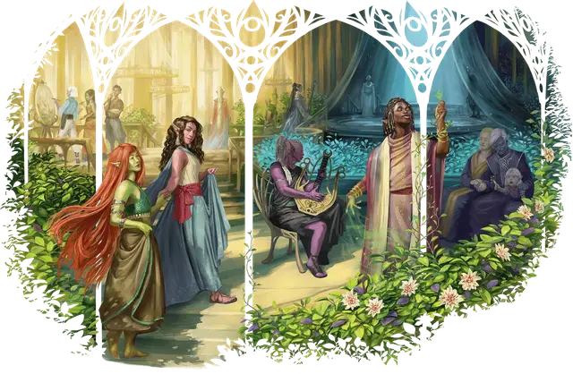

Эльф
Elf

Тип существа Гуманоид
Размер Средний (рост около 5-6 футов)
Скорость 30 футов
Созданные богом Кореллоном, первые эльфы могли неограниченно менять свой облик. Они утратили эту способность, когда Кореллон проклял их за сговор с божеством Лолс, пытавшейся узурпировать власть Кореллона и потерпевшей неудачу. После изгнания Лолс в Бездну большинство эльфов отреклись от неё и заслужили прощение Кореллона, но то, что Кореллон отнял у них, было потеряно навсегда.
Неспособные больше неограниченно менять облик, эльфы ушли в Страну Фей, влияние которой ещё усилило их печаль. Со временем любопытство привело многих из них к исследованию других Планов бытия, включая миры Материального плана.
У эльфов заострённые уши и отсутствуют волосы на лице и теле. Они живут около 750 лет и не спят, вместо этого для отдыха впадая в транс. В этом состоянии они по-прежнему осознают свое окружение, одновременно погружаясь в воспоминания и медитации.
За тысячелетия окружающая среда незаметно преображает эльфов, наделяя их определёнными видами магии. Таким образом, например, сформировались высшие эльфы, дроу и лесные эльфы.
Дроу
На Дроу повлияло Подземье, где они обычно и обитают. Отдельные дроу и целые их общины избегают Подземья, но все же обладают его магией. Например, в сеттинге "Эберрон" дроу обитают в тропических лесах и циклопических руинах на континенте Зендрик.
Высшие эльфы
Высшие эльфы впитали магию перекрёстков между Страной Фей и Материальным планом. В некоторых мирах они называют себя другими именами. Например, в Забытых королевствах они называют себя солнечными или лунными эльфами, они же — Сильванести и Квалинести в сеттинге "Саги о копье" и Эрени в сеттинге "Эберрон".
Лесные эльфы
Лесные эльфы несут в себе магию первобытных лесов. Они известны под многими другими именами, как дикие, зелёные или древесные эльфы. Гругачи — лесные эльфы-затворники из сеттинга Серого ястреба, а Кагонести и Тайрнадал — лесные эльфы из Саги о копьях и Эберрона сеттинга, соответственно.
Особенности
Вы обладаете следующими особенностями вида:
Тёмное зрение. У вас есть Тёмное зрение дальностью 60 футов.
Эльфийский род. Вы принадлежите к древнему роду, что даёт вам необычные способности. Выберите род из таблицы Эльфийские рода. Вы получаете преимущество 1-го уровня этого рода.
Когда вы достигаете 3-го и 5-го уровней персонажа, вы изучаете по заклинанию, как показано в таблице. У вас всегда подготовлено это заклинание. Вы можете сотворить его раз без траты ячейки заклинаний, и вы восстанавливаете возможность сделать это по завершению Долгого отдыха. Вы также можете сотворять его с помощью имеющихся у вас ячеек заклинаний подходящего уровня.
Вашей заклинательной характеристикой для этих заклинаний является Интеллект, Мудрость или Харизма (вы выбираете вместе с выбором рода).
Наследие фей. Вы совершаете с Преимуществом спасброски на избежание или окончание состояния Очарованный.
Обострённые чувства. Вы владеете одним навыком: Восприятие, Выживание или Проницательность.
Транс. Вам не нужно спать, и вас невозможно усыпить магически. Вы можете завершить Долгий отдых за 4 часа, если проведёте их в медитации, подобной трансу, во время которой вы остаётесь в сознании.
Эльфийские рода
| Род | 1-й уровень | 3-й уровень | 5-й уровень |
| Высшие эльфы | Вы узнаёте заговор Фокусы. Всякий раз, когда вы завершаете Долгий отдых, вы можете заменить этот заговор на другой заговор из списка заклинаний Волшебника. | Обнаружение магии | Туманный шаг |
| Дроу | Дальность вашего Тёмного зрения увеличивается до 120 футов. Вы также узнаёте заговор Пляшущие огоньки. | Огонь фей | Тьма |
| Лесные эльфы | Ваша Скорость увеличивается до 35 футов. Вы узнаёте заговор Искусство друидов. | Скороход | Бесследное передвижение |